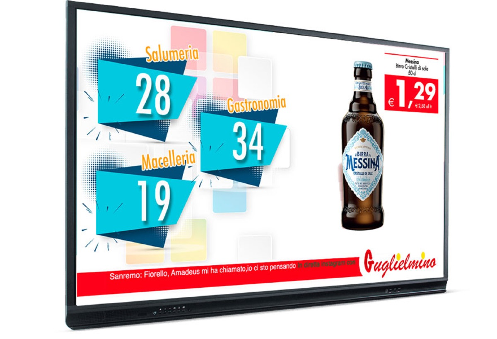

Aprire la postazione
Due minuti prima dell'apertura: quattro controlli evitano la maggior parte delle chiamate perse della giornata.

I quattro controlli
- Il monitor è acceso e a schermo intero
Deve mostrare il numero in servizio e il nome del reparto, non il desktop di Windows.
- Il reparto è quello giusto
Controlla che sulla postazione sia selezionato il tuo banco: Gastronomia, Macelleria, Pescheria o Ortofrutta.
- La stampante ha carta
Apri il coperchio, controlla il rotolo e chiudi bene: un ticket bianco blocca la coda all'ingresso.
- La coda risponde
Fai una chiamata di prova con il responsabile: il numero deve comparire sul monitor entro pochi secondi.
Leggere la coda
| Numero in servizio | Il turno chiamato adesso dal tuo reparto |
| Prossimo numero | Quello che chiamerai con Avanti |
| Persone in attesa | Quanti ticket restano nella coda del reparto |
Non chiudere l'applicazione
Se il monitor sembra bloccato, non chiudere la finestra: chiama il responsabile. La chiusura dell'applicazione interrompe le chiamate di tutto il reparto.
Guida MyEliminaCode Supermercati · Windows 1.4.0
Documento statico, consultabile senza connessione